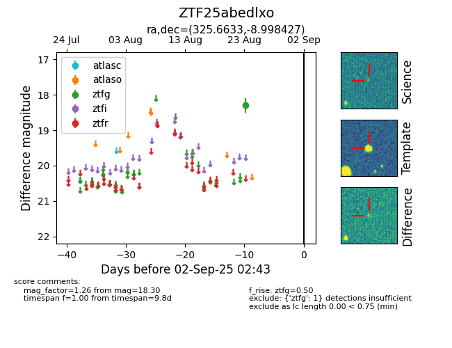

Target ZTF25abedlxo at 2025-08-26 12:10, see:
FINK: fink-portal.org/ZTF25abedlxo
Lasair: lasair-ztf.lsst.ac.uk/objects/ZTF25abedlxo
ALeRCE: alerce.online/object/ZTF25abedlxo
alt names
ZTF25abedlxo (ztf,fink)
coordinates:
equatorial (ra, dec) = (325.6633,-8.99843)
galactic (l, b) = (45.8961,-41.96022)
photometry
last ztfg=18.30
1 ztfg detections
